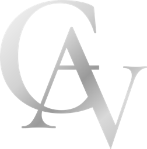

Direito Criminal
- Prisão em flagrante e audiência de custódia
- Inquérito policial e ação penal
- Tribunal do Júri
- Recursos aos tribunais superiores
- Execução penal

Advocacia com atuação em todo o Brasil
O Cares & Andrade Valentim Advogados Associados atua de forma completa nas principais áreas do Direito, em todo o território nacional, com atendimento on-line, sede em Naviraí/MS e plantão criminal 24 horas.
Por onde começar
Toque na situação mais próxima da sua e fale com a nossa equipe. O primeiro passo é entender o seu caso.
O escritório
Nascemos da união de dois advogados com trajetórias complementares, com o propósito de oferecer uma advocacia técnica e humana a quem precisa de orientação e defesa em momentos decisivos.
Do inquérito policial aos tribunais superiores, da pensão alimentícia ao contrato da sua empresa: cada caso é conduzido com estudo, transparência e acompanhamento próximo, explicando cada passo de forma compreensível.
Atuação em conformidade com o Código de Ética da OAB e absoluto sigilo sobre as informações de cada cliente.
Você entende o que está acontecendo no seu caso, quais são os riscos e quais são os próximos passos.
Atendimento on-line em todo o Brasil, presencial na sede e plantão criminal todos os dias, inclusive fins de semana e feriados.
Áreas de atuação
Atuação consultiva e contenciosa, para pessoas, famílias e empresas.
Fale com a nossa equipe. Explicamos as possibilidades com clareza.
Direito Criminal
Sócios

OAB/MS 30.706
Formado em Direito pela UEMS, com pós-graduação em Processo Penal, Processo Constitucional, Direito Tributário e Direito Médico e da Saúde. Atua na defesa criminal, do flagrante e da audiência de custódia aos tribunais superiores, com destaque para a execução penal, e no Direito de Família.
Falar com o Dr. Elvis
OAB/MS 26.984
Formado em Direito pela UEMS, em Naviraí, advoga desde 2022 nas áreas cível e criminal. É coautor de publicações científicas em Direito Civil e Responsabilidade Civil e atua na assessoria a empresas e ao comércio da região.
Falar com o Dr. JúniorComo funciona
Fale com a nossa assistente jurídica Andrômeda ou chame direto no WhatsApp. Ela organiza as informações iniciais e direciona seu caso.
Um advogado estuda a situação e os documentos, presencialmente ou on-line, com total sigilo.
Você recebe a explicação das possibilidades, dos riscos e do caminho mais adequado, com honorários combinados por escrito.
Você é informado sobre cada etapa importante do seu caso, com linguagem clara e canal direto com a equipe.
Onde atuamos
Atuamos nas varas criminais e cíveis, nos Tribunais de Justiça e nos Tribunais Regionais Federais de todo o Brasil, além das cortes superiores.
Atendimento on-line para clientes de qualquer cidade do Brasil, por videochamada e WhatsApp. Sede em Naviraí/MS, com atendimento presencial.
Perguntas frequentes
Sim, para casos criminais urgentes, como prisão em flagrante e audiência de custódia. O plantão funciona 24 horas pelo telefone e WhatsApp (67) 97400-8906, com escala entre os advogados do escritório.
Entre em contato com o plantão o quanto antes. Toda pessoa presa tem direito de permanecer em silêncio, de ter a família comunicada e de ser assistida por advogado (Constituição Federal, art. 5º, LXII e LXIII). Separe documentos pessoais, comprovante de residência e de trabalho da pessoa presa.
Pela lei, a pessoa presa em flagrante deve ser apresentada ao juiz em até 24 horas após a prisão (Código de Processo Penal, art. 310). Nessa audiência, o juiz analisa a legalidade da prisão e decide se ela será mantida, se haverá liberdade provisória ou outras medidas.
É altamente recomendável. Você tem direito de permanecer em silêncio e de ser acompanhado por advogado durante o depoimento (Constituição Federal, art. 5º, LXIII, e Estatuto da Advocacia, art. 7º, XXI). Procure orientação antes da data marcada.
Sim. O atraso das pensões pode levar à prisão civil do devedor, de 1 a 3 meses, em relação às três parcelas anteriores ao pedido e às que vencerem durante o processo (Código de Processo Civil, art. 528). Também é possível cobrar por penhora de bens e salário.
Até 2 anos após o fim do contrato de trabalho, podendo cobrar direitos dos últimos 5 anos (Constituição Federal, art. 7º, XXIX). Por isso, não deixe para depois.
Sim. Atendemos on-line, por videochamada e WhatsApp, clientes de todo o Brasil, e presencialmente na nossa sede em Naviraí/MS.
Sim. Atuamos em todo o território nacional, nas varas, Tribunais de Justiça e Tribunais Regionais Federais, além do STJ e do STF. O atendimento pode ser feito on-line, de qualquer lugar do Brasil.
Os honorários são definidos após a análise do caso, considerando sua complexidade, e observam a Tabela de Honorários da OAB/MS. Tudo é combinado de forma transparente e por escrito antes do início do trabalho.
Documento de identidade, CPF, comprovante de residência e todos os papéis relacionados ao caso (contratos, notificações, intimações, decisões, laudos ou carta do INSS, por exemplo). Se tiver dúvida, nossa equipe orienta pelo WhatsApp.
Sim. O sigilo profissional é um dever do advogado, previsto no Estatuto da Advocacia e no Código de Ética da OAB. As informações também são tratadas conforme a Lei Geral de Proteção de Dados (LGPD).
Sim. Oferecemos assessoria ao comércio e às empresas da região em cobrança, contratos, notificações extrajudiciais e consultoria tributária e trabalhista preventiva.
Contato